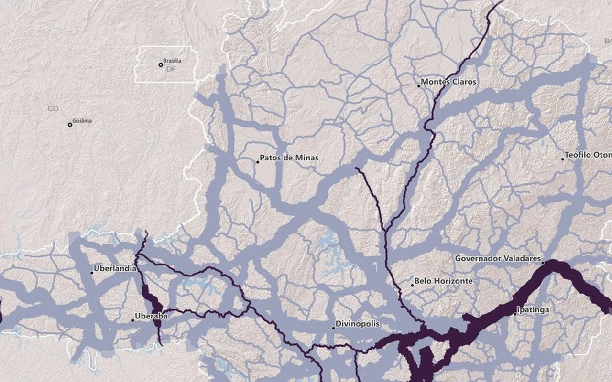

PELT-MG: plano de transportes de Minas Gerais até 2055
O Plano Estadual de Logística e Transportes de Minas Gerais, de Longo Prazo, analisou uma carteira de mais de R$ 1 trilhão em seis modos de transporte e priorizou 1.117 empreendimentos para o horizonte de 2055. Atuei na equipe técnica da CODEMGE que construiu o plano.
R$ 1 tri+em carteira de investimentos analisada, com 1.677 empreendimentos e 7.683 obras
Ficha do projeto
- Tarefa
- Base de dados, carteira de empreendimentos, análise espacial e indicadores de um plano estadual de transportes
- Dados e escala
- 1.677 empreendimentos e 7.683 obras analisados; 5.589 zonas de tráfego; Big Data de notas fiscais eletrônicas e de telefonia móvel
- Método e validação
- Modelo de 5 Dimensões (Five Case Model do Tesouro britânico), com cenário-base 2023 e quatro cenários para 2055
- Resultado
- Carteira analisada de mais de R$ 1 trilhão; 1.117 empreendimentos priorizados; plano em consulta pública em 2026

Problema
Minas Gerais tem uma das maiores malhas de transporte do país e precisa decidir onde investir em rodovias, ferrovias, aeroportos, dutos, portos e hidrovias pelas próximas três décadas. O PELT-MG de Longo Prazo responde a essa pergunta com dados: mede a demanda de cargas e de pessoas, simula a rede e classifica cada empreendimento.
Dados e escala
- Horizonte de 2023 a 2055, com cenário-base 2023, quatro cenários futuros e um contrafactual.
- Carteira analisada de mais de R$ 1 trilhão (CAPEX e OPEX): 1.677 empreendimentos, 7.683 obras e 55 iniciativas, cobrindo 99% dos municípios mineiros.
- Seis modos: rodoviário (1.507 empreendimentos), ferroviário (104), aeroportuário (33), dutoviário (18), portuário (8) e hidroviário (7).
- Demanda de 2023: cerca de 525 milhões de toneladas de carga e 350 milhões de viagens interurbanas de pessoas por ano, com crescimento das viagens projetado até 2055.
- Matrizes origem-destino com 5.589 zonas de tráfego, a partir de Big Data de notas fiscais eletrônicas (cargas) e de telefonia móvel (pessoas).
Abordagem
- Banco PostgreSQL/PostGIS único para a carteira, as redes e os indicadores do plano, sob minha gestão.
- Vetorização dos empreendimentos, análises espaciais da carteira e rotinas de ingestão e atualização dos dados.
- Montagem dos cenários da carteira e auditoria da view de acessibilidade usada nos indicadores de priorização.
- Tabelas de ligação entre aeroportos, municípios e unidades de planejamento e série histórica de passageiros ferroviários.
- Participei da construção e da revisão do painel Power BI do plano, publicado na consulta pública.
Como validei
- Classificação pelo Modelo de 5 Dimensões, com índice que combina as dimensões estratégica, socioeconômica e financeira nesta versão.
- Mais de 50 indicadores socioeconômicos em nove dimensões, com pesos definidos em workshops regionais.
- Revisão técnica externa da Fundação Dom Cabral.
Resultado
- Plano de Longo Prazo levado a consulta pública em 2026, com 1.117 empreendimentos priorizados.
- Painel público em Power BI com a carteira por setor, status, município e fonte de investimento.
- Uma base espacial única que sustenta mapas, painel e tabelas do relatório.
Meu papel
Na equipe técnica da CODEMGE: banco PostgreSQL/PostGIS do plano, carteira de empreendimentos, análises espaciais e indicadores, e construção e revisão do painel.
Figuras